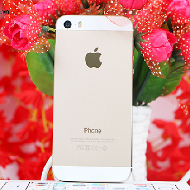
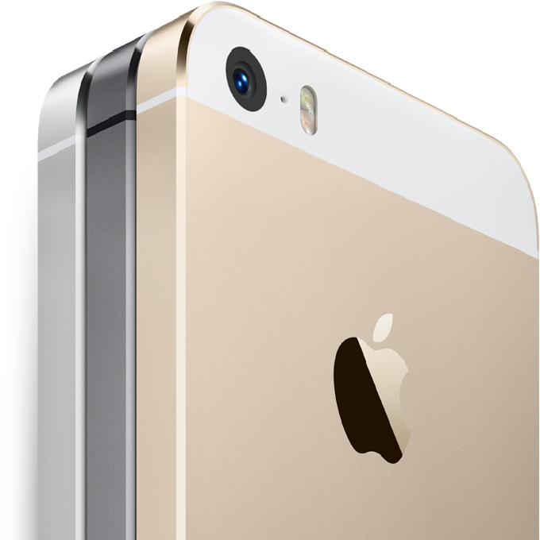
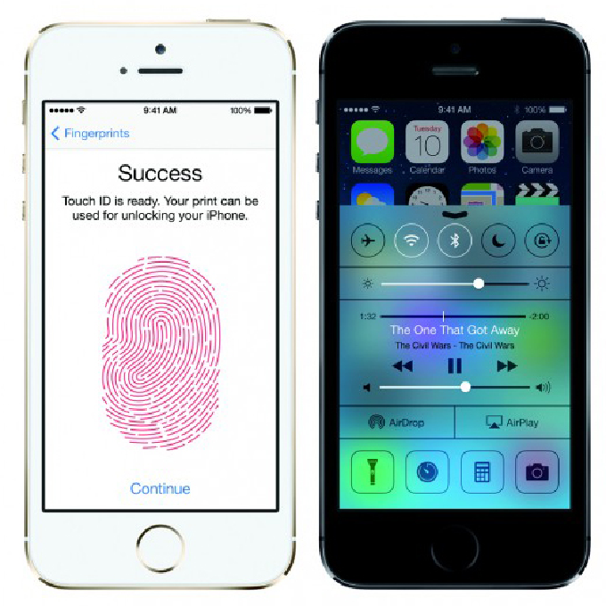

- 
- 
- 
Iphone 5s (New 99%)
10,000,000 VND
Apple iPhone 5 là một trong những siêu phẩm chiếm được cảm tình người tiêu dùng nhiều nhất nhờ hàng loạt nâng cấp và thiết kế cực kỳ ấn tượng so với 2 phiên bản iPhone 4, 4s. iPhone 5 đã thực sự bắt kịp xu hướng thời đại, với màn hình lớn và cao hơn với 4-inch, hỗ trợ kết nối 4G LTE. Máy còn được bổ sung thêm một vi xử lý mới là A6 và ống kính máy ảnh cũng được Apple thiết kế một cách kỹ lưỡng hơn.

Thiết kế hấp dẫn, gọn gàng
Apple vẫn giữ các đường nét thiết kế trên iPhone 4 và iPhone 4S - các đường cong bo góc, cạnh viền và hai mặt trước và sau đều phẳng. Các cạnh kim loại được làm tinh tế hơn và không sắc nét, và các mép viền được mài bằng công nghệ chính xác. Máy rất mỏng, chỉ 7,6 mm, chiều ngang vẫn tương đương iPhone 4/4S, nhưng chiều dài thêm 8,6 mm. Mặt sau bằng kính trước đây đã thay bằng nhôm được mài nhẵn.

Apple đã đưa giắc cắm tai nghe 3,5 mm xuống phía dưới. Loa ngoài được thiết kế lại, lớn và trông thô hơn. Các khớp ở cạnh bên nằm sát và có thêm lớp nhựa phủ kín.
Màn hình 4 inches IPS LCD, 16 triệu màu

Apple đã trang bị cho màn hình của chiếc iPhone mới lên 4 inch, độ phân giải là 1.136 x 640 pixel, đây là thay đổi lớn nhất trên chiếc iPhone mới khi 5 thế hệ đi trước vẫn trung thành với chuẩn 3,5 inch. Số điểm ảnh trên mỗi inch là 326, thấp hơn iPhone 4S với 330 ppi. Tuy nhiên, khi nhìn, người dùng có thể nhận thấy độ mịn không giảm, trong khi màu sắc lại tươi sáng hơn, đặc biệt sự tương phản tốt, các hình ảnh nhìn sâu hơn so với các thế hệ đi trước.
Cấu hình mạnh mẽ, chạy đa nhiệm mượt mà

iPhone 5 được trang bị chip xử lý lõi kép A6, tốc độ 1 GHz, Ram 1GB. Với cấu hình như vậy, iPhone 5 sẵn sàng chạy đa nhiệm mọi ứng dụng cũng như chơi những game nặng nhất một cách mượt mà.
Kết nối siêu tốc
iPhone 5 hỗ trợ Wi-Fi kép (2,4 GHz và 5 GHz) giúp bắt sóng tốt hơn, hỗ trợ mạng 4G LTE nhưng ở Việt Nam do hạn chế hạ tầng nên chỉ dùng được mang HSPA+.
Chụp hình 8 MP, siêu nét

Giống như nhiều smartphone cao cấp nhất khác, Apple vẫn giữ máy ảnh 8 megapixel và camera trước 1,2 megapixel cho phép quay video HD 720p, giúp bạn không bỏ lỡ mọi khoảnh khắc nào bên cạnh người thân và gia đình.
Hệ điều hành iOS 6
iOS 6 i mang tới giao diện rất mượt, đơn giản và dễ sử dụng giống như các model đi trước.

iOS 6 mạch lạc trong giao diện.
Khác với Android, từ iOS 5 lên bản 6 hầu như không có sự khác biệt về giao diện. Do màn hình dài hơn, iPhone 5 đã thêm một hàng phím. Máy khởi động nhanh, các ứng dụng vào ra đều trơn tru.

Facebook trên iOS được tích hợp.
Với những người yêu thích mạng xã hội, Facebook trên iOS 6 có nhiều cải tiến thú vị. Trên nền tảng mới, ngoài Twitter, Facebook đã được tích hợp trong tùy chỉnh của máy. Bạn có thể up ảnh lên Facebook trực tiếp từ Album trên máy cũng như chọn đưa và bất cứ Album nào lên Facebook. Ngoài ra, các tùy chọn chia sẻ cũng xuất hiện trên web và nhiều công cụ khác nhau.
Hình ảnh thực tế Apple iPhone 5 :

Góc trên màn hình.

Phím Home không thay đổi.

Cạnh trái.

Phía phải, nơi bố trí khe cắm nano-sim.

Bên dưới máy thay đổi nhiều nhất với sự hiện diện của giắc cắm tai nghe, cổng giao tiếp mới và màng loa lớn.

Mặt sau máy làm bằng kim loại, phần nhỏ phía trên được làm bằng kính.

Các đường cắt của iPhone 5 tinh tế.

Góc dưới phía sau.